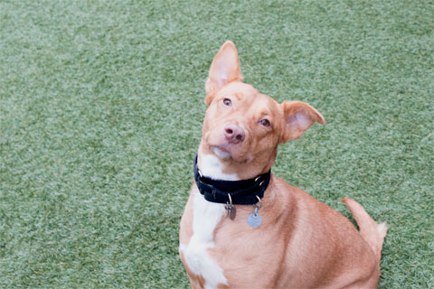

Meet Catalonia
Catalonia is a beautiful 4-year-old Retriever mix with a gorgeous red-golden coat and golden eyes. She is incredibly smart and active, so she craves training and exercise. A few of her favorite things include Kong toys, chew toys, and riding in the car. Catalonia is a very well trained dog in the home and is house trained. She learns quickly and would love the opportunity to show an experienced owner what a wonderful companion she can make!
About Catalonia
| Breed |
Gender |
Age |
Weight |
| Retriever/Mix |
Female |
4 Years |
30lbs |
Likes
- Going for a car ride? Take me along!
- I love playing with Kong toys
- Squeak! Squeak! I love Squeaky chew toys!
- I’ll take as much exercise as I can get!
- Did someone say ‘treat’? I’ll take them all
- I’m a people person!
- I’m a star pupil at obedience training
- You + a tennis ball = my perfect day
Dislikes
- I prefer to be the only pet in the home
- Keep me company! I prefer homebodies who are often at home
- I prefer quiet environments that aren’t crowded
Click here to adpot Catalonia